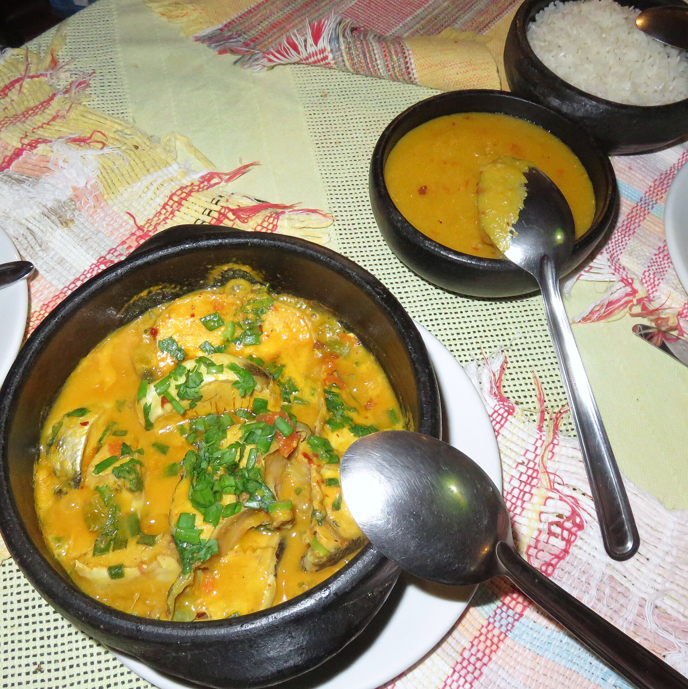

Peixe · Bahia
Moqueca baiana de vez
Peixe branco temperado no limão, leite de coco de verdade e dendê no ponto — pimentões que não viram magma. O segredo é não mexer: deixar a panela trabalhar.
45 min4 porçõesMédia
Passos
- Tempere o peixe com limão, sal e pimenta-do-reino por 20 minutos.
- Faça uma camada de cebola, tomate, pimentão vermelho e coentro no fundo da panela.
- Coloque o peixe por cima, cubra com leite de coco e um fio de dendê.
- Tampe e mantenha em fogo baixo por 25 minutos — o peixe não deve desmanchar.
- Sirva na própria panela com arroz branco e pirão.